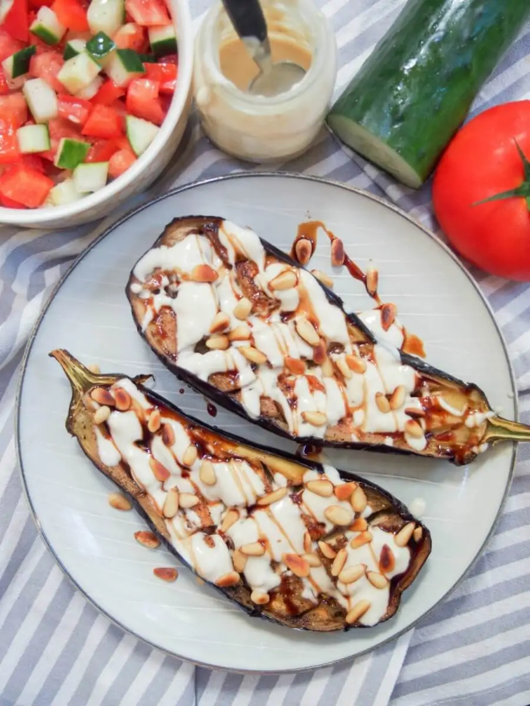

Combine all marinade ingredients except sesame seeds.
Dip tuna in marinade and turn over so that it is well coated.
Let marinate for 1 hour in the refrigerator.
Remove the tuna slices from the marinade and roll them in the sesame seeds.
In a hot frying pan with a little oil, sear the tuna very quickly on each side. It must remain raw
inside.
Cut the tuna into thinner slices before serving with wasabi, soy sauce and pickled ginger, for example.
You can also serve it with the marinade.
Roasted eggplant with tahini

Ingredients
1 eggplant
2 tablespoon olive oil
3 tablespoon tahini
1 clove garlic
1 tablespoon lemon juice
2 tablespoon water
1 tbsp pine nuts
½ teaspoon date syrup or pomegranate molasses/honey
Recipe
Preheat oven to 400F/200C.
Halve the eggplant lengthwise, then score each side without cutting through to the skin in a criss-cross
pattern around 1in/2.5cm apart. Put on a baking sheet, cut side up.
Brush both cut sides generously with olive oil - use the full amount above - then sprinkle with salt and
pepper and bake/roast. They should take around 40 minutes to become soft and tender inside and just starting
to brown on top.
While the eggplant is roasting, mix together the dressing.
Put the tahini, lemon juice and garlic in a small jar and shake together.
Add some water and shake again, adding a little more if needed to get a good pourable consistency.
When the eggplant is cooked, remove from the oven and drizzle with the dressing.
Sprinkle with pine nuts and date syrup or pomegranate molasses/honey.
Serve warm or at room temperature.
Crispy fried cauliflower
Ingredients
1 head of cauliflower
1 cup of flour
1 cup of cornstarch
1 cup of water
1 cup of milk
1 egg
1 teaspoon of salt
1 teaspoon of pepper
1 teaspoon of garlic powder
1 teaspoon of onion powder
Recipe
Preheat oven to 450 F / 232 C.
Wash and cut the cauliflower into florets.
Combine the flour, cornstarch, water, milk, egg, salt, pepper, garlic powder, and onion powder in a large
bowl. Whisk until smooth.
Dip the cauliflower florets into the batter and place on a baking sheet lined with parchment paper.